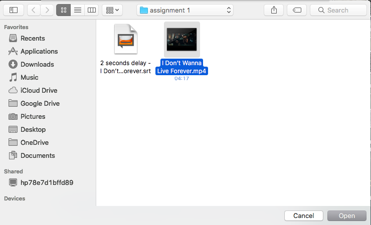
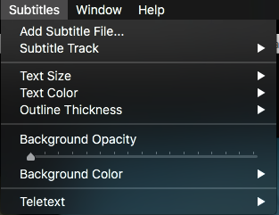
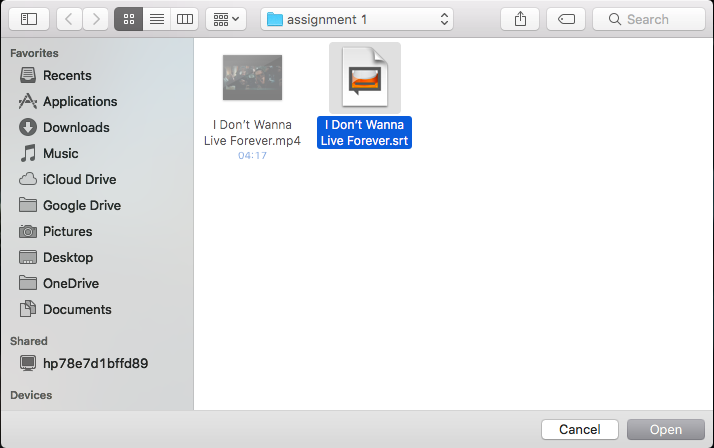

Linux - How to use VLC
How To Use VLC with Linux/ documentation version 2.0
How to install & open VLC #back to top
VLC already installed? - Skip the installation steps.
Install and open options for Linux
- Option 1 - Install and open VLC with the terminal. [CTRL+SHIFT+T]
- Step 1 - Install VLC from terminal.
endrel@pc0001:~$ sudo apt-get install vlc
endrel@pc0001:~$ vlc &
{kind=link}
{kind=link}
Playing a video file#back to top
Step 0 - Download a video with no subtitles - examplevideo.mp4.
Step 1 - Linux - On the VLC toolbar click on "Media", then select “Open file…”.

Step 2 - A directory window will open, navigate to the directory of your video file.
{kind=link}
Step 3 - Click the video file you want to view, and click "Open" or [ENTER] on the keyboard.
Adding subtitles to video file#back to top
Step 0 - Download a subtitle file for your video - examplesubtitle.srt.
Step 1 - Click the dropdown-menu [Subtitles] in the toolbar, select “Add subtitle file…”.
{kind=link}
Step 2 - The directory where your current Vide file is located will pop up, navigate to where your subtitle file is, choose it and press “Open”.
{kind=link}
Step 3 -The video will start playing with the Subtitles. If the subtitles and the video are not in sync then you will need to adjust the subtitle by delaying it or playing it ahead.
Step 4 - Linux - Click the dropdown-menu [Tools] in the toolbar, select "Track Synchronization".

Step 5 - A small window will appear, change the values of “Subtitle track synchronization”. If the subtitle is delayed then enter the number of seconds it is delayed in negative. In this case it is delayed by 2 seconds so enter “-2” and press Enter on your keyboard as it will apply the changes.

Keybinds & shortcuts#back to top
Note: Look up the specific keybinds for your Operating System if interested. They are described in the VLC settings [CTRL] + [P].
The keybinds described below is for Windows and Linux.
VLC keybinds
- Toggle VLC toolbars: [CTRL] + [H]
- Properties and settings: [CTRL] + [P]
Playback keybinds
- Playlists and library: [CTRL] + [L]
- Browse local files: [CTRL] + [O]
- Play / pause video: [SPACE]
- Volume control: [CTRL] + [ARROW UP / DOWN]
Playback options#back to top
The feature "Always on top" enables the VLC player to never be hidden behind other windows. This feature is brilliant if you need to watch something while working.
{kind=link}